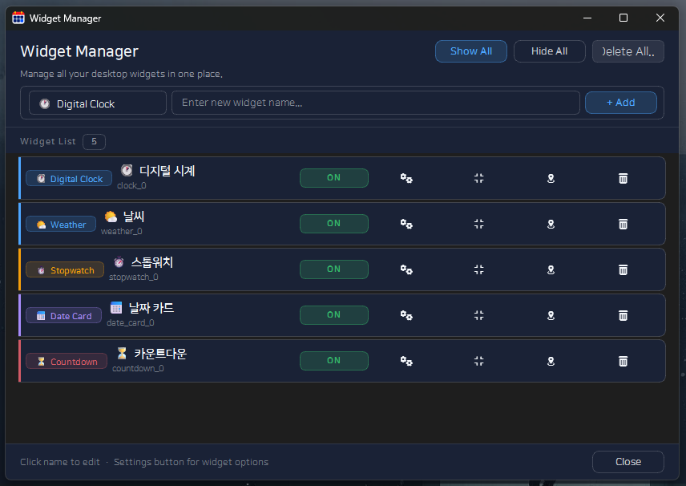
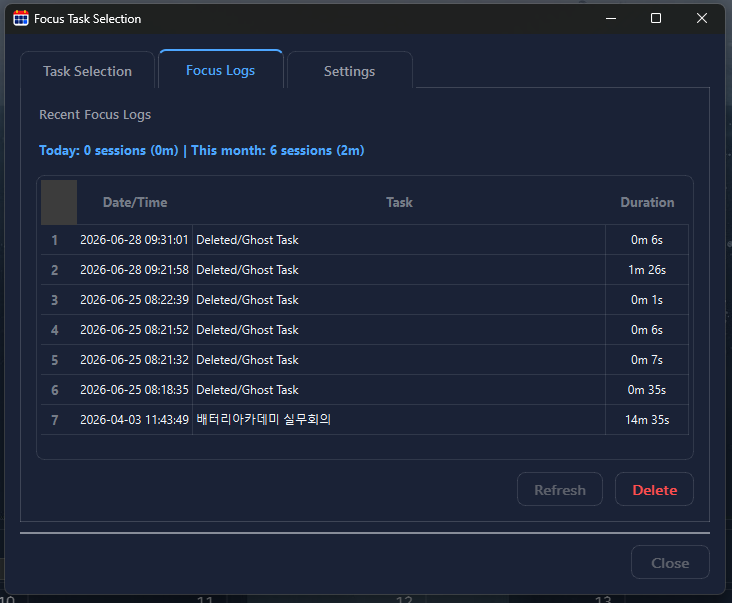
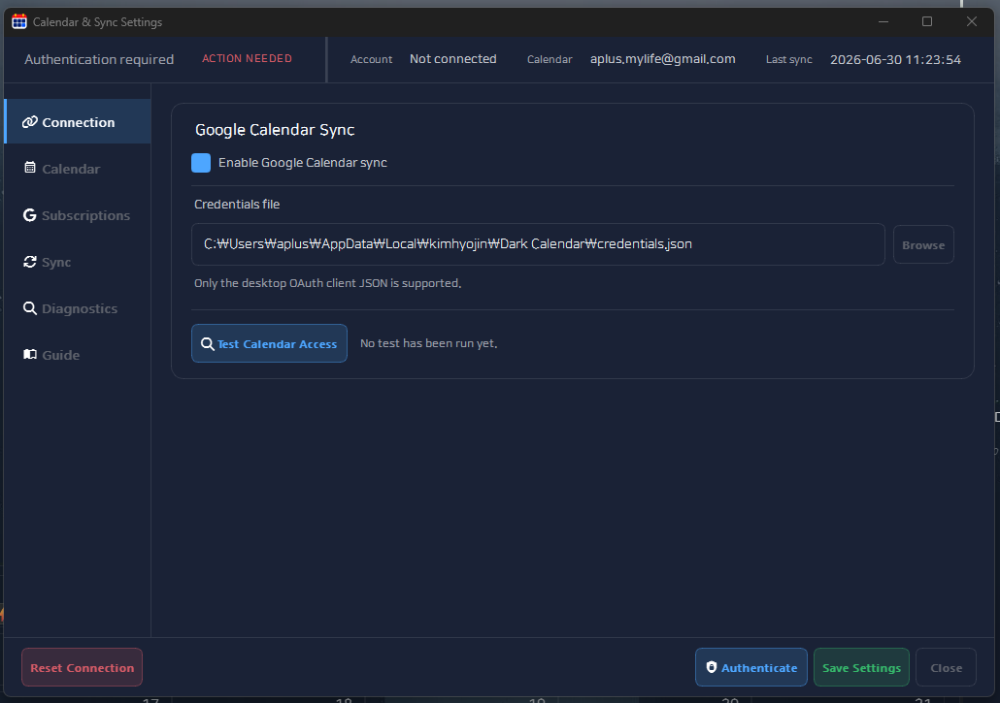

내 화면처럼
패널을 고정하고 분리하고 저장합니다.
Windows Desktop · Microsoft Store
캘린더를 고정하고, 패널을 띄우고, 위젯을 남겨두세요.
Dark Calendar는 일정 앱보다 작업 화면에 가깝습니다. 오늘 필요한 정보만 골라 내 데스크톱에 배치합니다.
패널을 고정하고 분리하고 저장합니다.
D-Day, 시간, 날씨를 바탕화면에 둡니다.
잠금 모드로 배치를 지킵니다.
확인에서 실행까지 한 화면에 둡니다.
Panel Freedom
캘린더는 크게, 업무 패널은 옆에, 위젯은 바탕화면 위에. Dark Calendar는 당신의 화면 배치를 따라갑니다.
캘린더와 업무 패널을 한 화면에 모읍니다.
일정이 중요한 날에는 캘린더를 더 크게 봅니다.
처리할 일이 많을 때는 실행 패널을 넓힙니다.
보조 모니터와 세로 화면에도 자연스럽게 배치합니다.
자주 보는 정보는 가까이 두고, 덜 중요한 정보는 접어둡니다.
업무, 회의, 집중 모드에 맞는 구성을 빠르게 되돌립니다.
Core Message
일정, 루틴, 실행 항목, 집중 도구를 한 화면에서 다룹니다. 복잡함은 줄이고 흐름은 이어갑니다.
도킹, 탭, 플로팅으로 화면을 조립합니다.
반복할 일과 바로 할 일을 따로 봅니다.
선택한 작업을 타이머와 함께 밀어줍니다.
외부 일정과 데스크톱 흐름을 연결합니다.
상황에 맞는 화면으로 빠르게 전환합니다.
정리한 화면을 안전하게 유지합니다.
Screenshots
실제 화면은 나중에 같은 파일명으로 교체할 수 있습니다. 클릭하면 크게 볼 수 있습니다.

main-dashboard.png

widget-manager.png

focus-mode.png

calendar-sync.png
Visual Highlights
큰 흐름과 오늘의 일을 함께 봅니다.
시간, D-Day, 날씨를 계속 띄워둡니다.
긴 업무를 작은 세션으로 나눕니다.
Widgets
시계, D-Day, 카운트다운, 날씨, 텍스트를 바탕화면 위에 남깁니다.
Workflow
오늘의 큰 그림을 확인합니다.
해야 할 일을 분리합니다.
선택한 작업을 시작합니다.
중요한 정보는 위젯으로 둡니다.
Details
캘린더와 업무 흐름을 한 화면에 둡니다.
D-Day와 카운트다운을 늘 보이는 곳에 둡니다.
회의, 집중, 검토에 맞춰 레이아웃을 전환합니다.
For Users
회의, 마감, 반복 업무를 함께 보는 사용자
외부 일정도 데스크톱에서 보고 싶은 사용자
D-Day와 시계를 가까이에 두고 싶은 사용자
작업을 고르고 집중 시간을 남기는 사용자
Requirements
Install
무료 설치 이벤트는 별도 팝업에서만 안내됩니다.
선착순 무료 설치 이벤트
선착순 전용 링크가 열려 있습니다.
수량 또는 기간에 따라 조기 종료될 수 있습니다.Promotion Admin